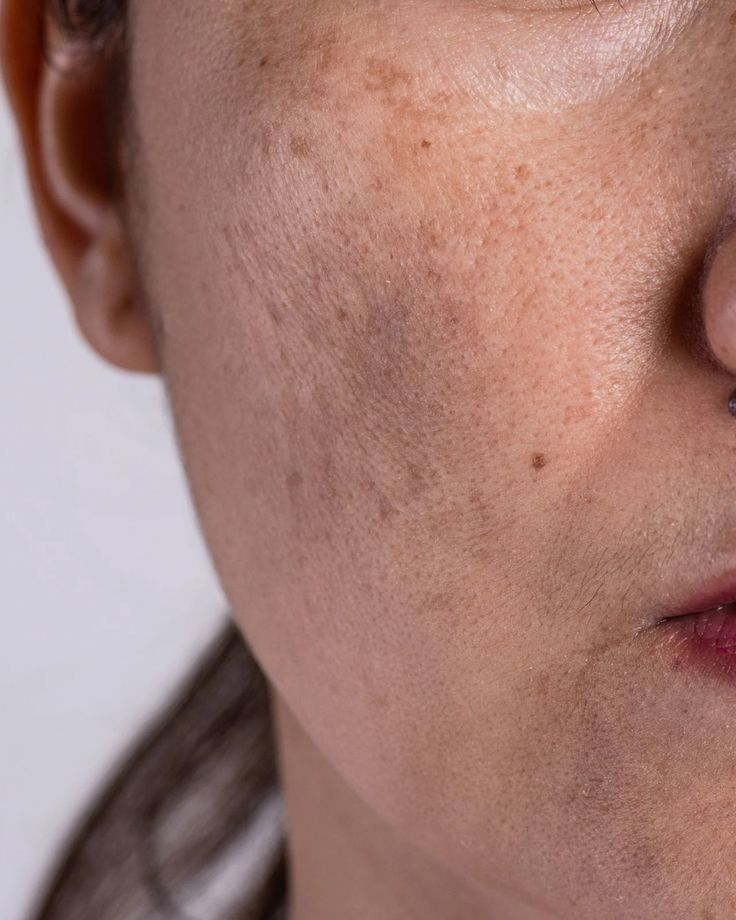

Behandlingar som jämnar ut hudton och ljusar upp pigmentfläckar – anpassade efter din hudtyp.
Pigmentförändringar uppstår när huden bildar melanin ojämnt – av sol, hormoner, ålder eller tidigare inflammation. Vi anpassar behandlingen efter vilken typ du har.
Hormonellt betingad pigmentering, ofta på kinder, panna och överläpp. Vanlig vid graviditet eller p-piller och förvärras av sol. Sitter djupt och kräver en varsam, anpassad strategi.
Bruna fläckar som uppstår av UV-exponering över tid. Vanligast på ansikte, dekolletage och händer.
Mörka märken som blir kvar efter akne, inflammation eller hudskada.
Genetiskt betingade små fläckar som mörknar i solen.
💡 Vid melasma är starkare peeling inte alltid bättre. Pigmentet produceras av kroppen och kan återkomma – ibland krävs en varsammare behandling kombinerad med medicinsk uppföljning. Boka gärna en konsultation först så hittar vi rätt strategi.
Avancerad medicinsk pigmentpeeling (Dermaceutic) mot melasma, solfläckar och hormonell pigmentering. Melaninreglerande för ljusare, jämnare hudton. Eftervårdskräm ingår.
Medicinsk, djupverkande TCA-peeling som reducerar pigmentfläckar och solskador och stimulerar kollagen. För hud som behöver kraftfullare korrigering.
Aktiv exfoliering som minskar pigmenteringar och ojämn hudton och ger lyster. Skonsamt startalternativ.
Biostimulerande behandling utan nålar eller fjällning som jämnar ut hudton och pigmentering – helt utan återhämtningstid.
 PRX-applicering
PRX-applicering Ice mask
Ice maskPigmentförändringar uppstår när hudens melaninproduktion blir ojämn. Vanliga orsaker är sol, hormoner (t.ex. graviditet eller p-piller), ålder och tidigare inflammation eller hudskada.
Behandlingarna anpassas för olika hudtoner, men mörkare hud har högre risk för postinflammatorisk pigmentering. Därför anpassas styrka och metod individuellt – en konsultation rekommenderas innan behandling.
Det är lätt att förväxla dem. Solskador/solfläckar: enskilda, tydligt avgränsade fläckar (runda/ovala, som stora fräknar) med skarpa kanter, på solutsatt hud (ansikte, händer, dekolletage, axlar), vanligare med åldern. Melasma: större, suddiga sammanhängande partier med otydliga kanter, ofta symmetriskt på kinder/panna/överläpp som en "mask", brun till gråbrun, kopplad till hormoner och förvärrad av sol och värme. Tumregel: spridda, skarpt avgränsade fläckar = oftast solskador; suddig, symmetrisk "mask" = oftast melasma. Detta är vägledning, inte diagnos – är en fläck ny, förändras eller ser oregelbunden ut, låt en läkare bedöma den innan behandling.
Ja, en blandning är vanlig – särskilt vid både hormonell pigmentering och år av solexponering. Därför är en bedömning viktig för att välja rätt strategi.
Det beror på typ och djup. Solfläckar och ytlig pigmentering svarar ofta bra på kemisk peeling eller TCA-peeling. Melasma och hormonell pigmentering kräver en varsammare, mer riktad strategi (pigmentpeeling, PRX-T33 eller microneedling). Vi rekommenderar en konsultation så vi väljer rätt för just din hud.
Ja, men melasma kräver en realistisk och varsam strategi. Pigmentet sitter djupt i huden och produceras kontinuerligt, så en peeling kan ljusa upp det men det kommer ofta tillbaka – ibland inom någon vecka, ibland håller resultatet längre. Starkare peeling är inte automatiskt bättre vid melasma; kraftiga behandlingar kan i vissa fall till och med förvärra tillståndet. Vid envis melasma behövs ofta ett besök hos dermatolog för starkare topikala krämer och ibland oral medicinering. Vi går igenom vad som är realistiskt för just din hud vid en konsultation – och dagligt SPF 50 är alltid avgörande.
Pigmentering behandlas oftast i en kur, vanligtvis 3–6 behandlingar med några veckors intervall. Resultatet är individuellt.
De flesta behandlingar känns som värme eller lätt stickning. Nedtiden varierar: milda peelingar ger ingen eller lätt fjällning, djupare TCA-peeling kan ge fjällning i några dagar, och PRX-T33 har ingen nedtid.
Vanliga åldersrelaterade solfläckar svarar ofta bra på kemisk peeling, eller microneedling kombinerat med peeling. Enstaka, tydligt avgränsade fläckar kan tas bort punktvis manuellt med plasmapen – tänk på att området då kan bli ljusare än omgivande hud under en längre tid medan huden återhämtar sig. Efter sommaren är en TCA-peeling (Cosmo Peel) för ansikte, hals och dekolletage särskilt populär: den exfolierar bort de yttre, solskadade hudcellerna så att ny, jämnare hud bildas. Några behandlingar kan behövas för optimalt resultat.
Picka inte på finnar eller hudförändringar – det är en vanlig orsak till postinflammatorisk pigmentering, särskilt i mörkare hud. Behandla akne tidigt och solskydda alltid området efter en hudskada.
Lyster syns ofta direkt efter mildare behandlingar. Vid djupare pigmentering utvecklas resultatet gradvis över flera veckor och behandlingar.
Särskilt vid melasma och hormonell pigmentering fortsätter huden att producera melanin, så utan underhåll och konsekvent solskydd återkommer pigmentet. Därför ser vi pigmentering som något man hanterar över tid snarare än botar med en enstaka behandling.
Pigmentbehandlingar görs ofta bäst under höst och vinter när solen är svagare – det minskar risken för pigmentering efter behandling och skyddar resultatet. Efter sommaren är ett bra läge att ta itu med uppkomna solskador.
Helt avgörande. Använd SPF 50 dagligen. Vid melasma rekommenderas en tonad eller mineralisk solkräm med järnoxider – den skyddar även mot synligt ljus (inkl. blått ljus) som kan trigga och förvärra pigmentering, något vanlig solkräm inte fångar. Utan solskydd stimulerar solen ny pigmentproduktion och resultatet bryts snabbt ned.
"Supertrevlig och duktig! Rekommenderar."
Google"Isabella är så duktig och jättetrevlig. Man känner sig så omhändertagen. Riktigt professionellt!"
Google"Duktig, trevlig och lugnande om man är nervös. Kan inte rekommendera henne nog."
Google"Alltid nöjd efter behandling hos bästa Isa. Snart tillbaka!"
Bokadirekt"Isabella är fantastisk som person och fantastisk på sitt jobb!"
Bokadirekt"Best place for skincare."
BokadirektBoka en konsultation så bedömer vi din hud och rekommenderar bästa behandlingsupplägg.
Välj område nedan.
Välj område nedan.
Välj område nedan.
Välj område nedan.